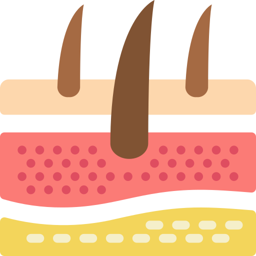

Cosmetologia
O que é Cosmetologia
É a ciência que estuda as matérias primas e os produtos cosméticos destinados ao embelezamento, limpeza, manutenção e a melhora da pele e seus anexos.
Camadas da pele
Epiderme
Derme
Hipoderme
- Epiderme: é a camada mais superficial da pele em contato com o ambiente
- Derme: é a camada intermediaria da pele. Ela é formada por tecido conjuntivo e apresenta-se mais elastica e firme devido à presença de colágeno e elastina.
- Hipoderme: é a camada mais interma, porém, mão é considerada parte da pele. Ela é constituída por celulas adiposas, fibras de colageno e vasos sanguíneos
Ativos
Substâncias utilizadas em tratamentos estéticos e dermatologicos para melhorar a saúde e a aparência da pele.
Confira alguns dos ativos mais utilizados:
Ácido
Hialurônico:
É o hidratante natural do corpo, o mesmo atua de dentro para a fora, preenchende rugas e linhas finas de expressão
Resultados:
- 1. Possui ação hidratante
- 2. Auxilia na retenção de água
- 3.Agente preenchedor e anti-flacides
- 4. Possui propriedades antioxidantes
Ácido
Ferúlico:
O Ácido Ferúlico é um ativo com ação antioxidante, firmadora e uniformizadora da pele, que combate os sinais do envelhecimento precoce e possui eficiência na prevenção de rugas e linhas de expressão.
Resultados:
- 1. Protege contra o envelhecimento precoce
- 2. Previne contra a flacidez e melhora a firmeza da pele
- 3.Uniformiza o tom da pele
- 4. Estabiliza as vitaminas C e E
Niacinamida:
Conhecida como Vitamina B3, previne a acne e melhora a textura da pele. Contribui ainda para a inibição da formação de sequelas da acne, pois possui propriedades relacionadas à uniformização do tom da pele (ação iluminadora), inibindo o surgimento de hipercromias.
Resultados:
- 1. Regula a produção de sebo pelas glândulas sebáceas
- 2. Inibe a liberação de mediadores inflamatórios
- 3.Aumenta a síntese de ceramidas, ácidos graxos e colesterol
- 4. Inibe a transferência de melanina dos melanócitos para os queratinócitos
Ácido
Glicólico:
Ácido Glicólico é um ativo que potencializa a renovação celular, suaviza os sinais de envelhecimento, favorece o rejuvenescimento, equilibra a textura e a oleosidade da pele e atua no clareamento de manchas e atenua cicatrizes.
Resultados:
- 1. Ameniza os sinais do envelhecimento através de ação rejuvenescedora
- 2. Clareia manchas como de melasma ou provenientes da acne
- 3.Controla a oleosidade, prevenindo o aparecimento de cravos e espinhas
- 4. Suaviza cicatrizes através de processo de esfoliação profunda
Vitamina C:
A Vitamina C, também chamada de Ácido Ascórbico, é uma substância multifuncional para a pele, possui ação antioxidante, auxilia no combate aos efeitos nocivos da exposição solar e dos radicais livres, além de desempenhar ação clareadora e rejuvenescedora.
Resultados:
- 1. Uniformiza os tons da pele
- 2. Aumenta a firmeza e a elasticidade
- 3.Contribui para o funcionamento do sistema imune
- 4. Auxilia no metabolismo energético e de proteínas e gorduras
Ácido
Mandélico:
O Ácido Mandélico é um ativo poderoso no combate a rugas e linhas de expressão, que age como peeling químico com esfoliação leve. Possui ação hidratante, clareadora, antibacteriana e fungicida e seu uso é indicado para peles sensíveis e acneicas.
Resultados:
- 1. Uniformiza os tons da pele
- 2. Reduz manchas causadas pela acne ou provenientes do melasma
- 3.Auxilia no tratamento da acne através de função antibacteriana
- 4. Promove limpeza dos poros, estimulando a renovação celular através da esfoliação
Ácido
Salicílico:
Melhora a textura da pele, por atuar como esfoliante na superfície do tecido e dentro dos poros, sem provocar irritação cutânea elevada. Melhora a aparência de peles envelhecidas. Indicado também para peles acneicas pela ação efetiva na redução da formação da acne e comedões. Pode ter ação antifúngica e possui ação antisséptica moderada.
Resultados:
- 1. auxilia na diminuição da produção de sebo
- 2. diminui as imperfeições da acne
- 3.desobstrui os poros
- 4. melhora a textura da pele
Classificação dos Cosméticos
- Sabonete Líquido
- Gel
- Creme
- Leite
- Loção
- Máscara
- Óleo
Cuidado Diário
- Skincare Diurno
- 1.Limpeza
- 2.Tonificação
- 3.Hidratação
- 4.Fotoproteção
- Skincare Noturno
- 1.Limpeza
- 2.Tonificação
- 3.Hidratação